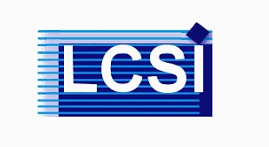
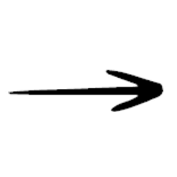

Sujets de PFE| Enseignants | Etudiants | Intitulés du sujet |
|---|---|---|
| Hamdad Leila |
BOUAZIZ Sofiane |
Étude de l'art sur l'amélioration des performances de l'apprentissage fédéré dans des environnements hétérogènes en utilisation l'apprentissage par renforcement |
| Hamdad Leila et al | DERDOUHA Iheb et BOUKARI Imed | Étude des systèmes de détection d’intrusion dans les réseaux (NIDS) basés sur les LES GRAPH NEURAL NETWORKS (GNN) |
| G.Oana, L.Hamdad | MOKHTARI Melissa | Comprendre comment la désinformation se propage dans les groupes Facebook |
| Hamdad Leila |
OUCHEBARA Dyna |
L’apprentissage par renforcement pour l’allocation de ressources radio dans les réseaux sans fil modernes |
| Hamdad Leila |
BOUKARI Lina et BOUZOUL |
Les Techniques de Compression des Modèles Deep Learning dans un Contexte EdgeComputing |
| Hamdad Leila | SARI Boumediene | Prédiction des émissions en dioxyde de carbone |
| Ahriz Iness, L. Hamdad | ADJEDJOU Hakim et Bacha Amine | L’apprentissage par renforcement pour la localisation dans les environnements dynamiques |
| SEHAD Abdenour & BESSAH Naïma |
OUKERIMI Moussa Riad & Mr. REZKI Ramzi |
Les méthodes de repérage de mots dans les documents manuscrits et dégradés |
| LAMMARI Amina & BESSAH Naïma |
Bourouina Anfal |
Approche ML pour la sécurité des données dans les réseaux RIS (surfaces intelligentes reconfigurables) |
| Ait Ali Yahia Yassine, Amrouche Karima |
KACEMI SOUHIB - TAIBI MOHAMED KAMEL EDDINE |
Étude des techniques d'optimisation des architectures en deep learning |
| BERKANI Nabila |
ALI Samra & BERKANE Wided |
L’aide à la décision basée sur les techniques optimisées de data mining |
| Miloud Bagaa (AALTO FINLAND) et SEHAD Abdenour |
MERAKCHI Hiba |
Intelligence artificielle/Apprentissage automatique pour la gestion des ressources dans le continuum Cloud-Edge |
| SEHAD Abdenour et Mokaddem Hakim |
MOKHEFI Faouzi Rayane |
Étude des méthodes d'intelligence artificielle pour les agents conversationnels |
| ZENATI Nadia (CDTA) et M. SEHAD Abdenour |
AMOKRANE Ilhem et GUETOUTOU Romaissa |
Étude comparative des méthodes d’estimation de pose 3D pour la réalité augmentée |
| DEBBAH Merouane (TII Abuabi) et SEHAD Abdenour | BOUCHEFIRAT Loukmane et FELLAG takieddine | Revue sur l'optimisations de la Qualité d'Expérience pour la diffusion vidéo HTTP 6DoF en nuage de points |
| RENNANE Ahmed (CDER) et SEHAD Abdenour | CHELLAT Hatem | Les approches du machine learning pour la maintenance préventive des éoliennes |
| SEHAD Abdenour et BESSAH Naima |
REZKI Ramzi et OUKERIMI Moussa Riadh |
Les méthodes de repérage de mots dans les documents manuscrits et dégradés |
| ARIES Abdelkrime et BAGAA Miloud | TAMAZOUZT Messipsa | Utilisation de l'intelligence artificielle pour le déchargement des tâches au niveau du cloud-edge continuum |
| ARIES Abdelkrime et ZERROUKI Taha | ABER Seyf-El-Islem et NASRI Mohammed | Reconnaissance de la parole arabe avec l'apprentissage profond et l'élimination de bruit |
| Khouri Selma , KACHER Sabrina (EPAU) ALLAOUCHICHE Sara (EPAU) |
BAIBA Loubna |
Les matériauthèques numériques de l’architecture |
| Khouri Selma | BOUACILA Hana et FANTAZI Yousra | Les architectures de lacs de données : étude bibliographique et analyse |
| LAMMARI CHAFIKA AMINA & BESSAH NAIMA |
BOUROUINA ANFAL |
Approche ML pour la sécurité des données dans les réseaux RIS |
| OUFAIDA H. & SAID LHADJ L. | AIN GUERAD & M. & BENAISSA Y. |
Les approches de modélisation de la temporalité de l’influence
sociale sur les médias sociaux |
| OUFAIDA H. & AZROU L. | MEHAR K. & MECHOUAR M. F. |
Les approches de modélisation de la cohérence du discours en
utilisant l’apprentissage profond |
| MENACER DJAMEL EDDINE / MORSLI AHMED |
OTMANI YOUNES |
Services et Microservices dans le Cloud computing |
| MENACER DJAMEL EDDINE / BOUZERFANE SAMIA | HAMZAOUI IDRISS | Développement d’un algorithme intelligent de consensus hybride dans un système de gestion d’identité auto-souveraine |
| MENACER DJAMEL EDDINE |
DJILI OUSSAMA |
Vers une distribution quantique de clé de chiffrement (QKD) optimisée |
| Zouana Seyfeddine, Pascal Neuveu |
REBAHI Nour El Intissar |
BlockChain et ses alternatives dans le domaine agro-alimentaires |
| Enseignants | Etudiants | Intitulés du sujet |
|---|---|---|
| Ait Ali Yahia Yassine , Amrouche Karima | KACEMI SOUHIB - TAIBI MOHAMED KAMEL EDDINE | Titre Optimisation des architectures en deep learning en utilisant les techniques de plongement de graphes |
| Amrouche Karima, Seba Hamida | HAMOUCHE DJAMEL EDDINE - KADRI MOHAMED REDA | Détection d’attaques en utilisant l’apprentissage automatique et les graphes |
| Ait Ali Yahia Yassine | MEBARKI Lamisse | Utilisation de l’apprentissage par renforcement inverse pour l’évaluation d’une position dans un jeu d’échec |
| Hamdad Leila et al | BOUAZIZ Sofiane | Apprentissage Profond Fédéré par Renforcement dans l’Internet des objets pour les applications de santé |
| Bouzefrane Sami, , L.Hamdad et al | DERDOUHA Iheb et BOUKARI Imed | Conception d’un Système Intelligent basé sur les Graphes Learning (GNNs) pour la Détection d’Intrusion dans un Réseau IoT |
| G.Oana, L.Hamdad |
MOKHTARI Melissa |
Étudier comment la (dés)information se diffuse dans les groupes Facebook |
| AdjibWissem, , L.Hamdad | OUCHEBARA Dyna | L’apprentissage par renforcement pour l’allocation des ressources dans un réseau sans fil utilisant la technologie cell-free |
| Allal Imed, , L.Hamdad | BOUKARI Lina et BOUZOUL. | EdgeMLOps : L’optimisation du Déploiement des Modèles Machine Learning dans un Contexte EdgeComputing |
| Hamdad Leila | SARI Boumediene | Prédiction des émissions en dioxyde de carbone |
| AhrizIness, Hamdad Leila | ADJEDJOU Hakim | L’apprentissage par renforcement pour la localisation en intérieur |
| BERKANI Nabila | BENICHOU Younes & HAFRI Seifali | Conception et Réalisation d’un Système de Gestion de Formation (LMS) en SaaS pour Djezzy OTA |
| BERKANI Nabila | ALI Samra & BERKANE Wided | Conception et réalisation d’un système d’analyse décisionnelle et prédictive à partir des données de l’ERP Odoo |
| Miloud Bagaa (AALTO FINLAND) et SEHAD Abdenour | MERAKCHI Hiba | Intelligence artificielle/Apprentissage automatique pour la gestion des ressources dans le continuum Cloud-Edge |
| SEHAD Abdenour et Mokaddem Hakim | MOKHEFI Faouzi Rayane | Étude des méthodes d'intelligence artificielle pour les agents conversationnels |
| ZENATI Nadia (CDTA) et M. SEHAD Abdenour | AMOKRANE Ilhem et GUETOUTOU Romaissa | Vers la mise en place d'un système d’estimation de la pose 3D et de visualisation basé RA pour la formation médicale |
| DEBBAH Merouane (TII Abuabi) et SEHAD Abdenour | BOUCHEFIRAT Loukmane et FELLAG takieddine | Optimisations de la Qualité d'Expérience pour la diffusion vidéo HTTP 6DoF en nuage de points |
| RENNANE Ahmed (CDER) et SEHAD Abdenour | CHELLAT Hatem | Conception d’un système IoT de surveillance des éoliennes sans fil à faible énergie |
| SEHAD Abdenour et BESSAH Naima | REZKI Ramzi et OUKERIMI Moussa Riadh | Plateforme de Repérage de mots dans les documents manuscrits et dégradés |
|
ARIES Abdelkrime |
KAMICHE Faiez et TELLI Mohamed Khoudja | Affectation automatique des sujets PFE aux jury de validation |
| ARIES Abdelkrime et ZERROUKI Taha | ABER Seyf-El-Islem et NASRI Mohammed | Reconnaissance de la parole arabe avec l'apprentissage profond et l'élimination de bruit |
| Ladjel Bellatreche et Soumia Benkrid | ROUZZI CHAIMA - KERMICHE ASMA | Système intégré et explicable pour la mise en place des solutions orientées données: cas de la consommation énergétique dans les bâtiments intelligents |
| Soumia Benkrid | AISSAOUI ASMA - BOUDJEMIA LILYA | Conception et Réalisation d’une solution d’analyse décisionnelle pour l’analyse des clients de l’entreprise NAFTAL |
| Soumia Benkrid | AZZOUZ BAHA EDDINE- MERAGHNI ABDENNOUR | Conception et mise en place d’une solution d’analyse des données de la distribution des boissons Ramy |
| Khouri Selma , kacher Sabrina (EPAU), Allaouchiche Sarah (EPAU) |
Baiba Loubna. |
Conception et réalisation d’une matériauthèque numérique basée sur un knowledge graph, appliquée au patrimoine bâti algérien |
| Khouri Selma CHETTA Abdelmalek (Itihad) | BOUACILA Hana et FANTAZI Yousra | Conception et implémentation d'un Delta Lake thématique « commercial » exploité par plateforme BI de 4ième Génération : Metatron |
| CHEBIEB Abdelkrim, Khouri Selma | YAHIA Younes | Conception et réalisation d’un portail e-learning pour l’ESI |
| LAMMARI CHAFIKA AMINA & BESSAH NAIMA |
BOUROUINA ANFAL |
Approche ML pour la sécurité des données dans les réseaux RIS |
| OUFAIDA H. & SAID LHADJ L. | AIN GUERAD & M. & BENAISSA Y. | Temporalité de l’influence sociale sur les médias sociaux |
| OUFAIDA H. & AZROU L. |
MEHAR K. & MECHOUAR M. F. |
Modélisation de la cohérence du discours en utilisant l'apprentissage profond |
| MENACER DJAMEL EDDINE / BENATCHBA KARIMA |
LAOUADI ABIR |
Une Méthode Machine Learning pour la détection de Malware |
| MENACER DJAMEL EDDINE |
DJILI OUSSAMA |
Vers une distribution quantique de clé de chiffrement (QKD) optimisée |
| BOUZERFANE SAMIA / MENACER DJAMEL EDDINE |
HAMZAOUI IDRISS |
Développement d’un algorithme intelligent de consensus hybride dans un système de gestion d’identité auto-souveraine |
| MENACER DJAMEL EDDINE / MORSLI AHMED |
OTMANI YOUNES |
Conception et mise en place d’un Marketplace des services basé sur la technologie Container |
| Zouana Seyfeddine, Pascal Neuveu |
REBAHI Nour El Intissar |
BlockChain et ses alternatives dans le domaine agro-alimentaires |